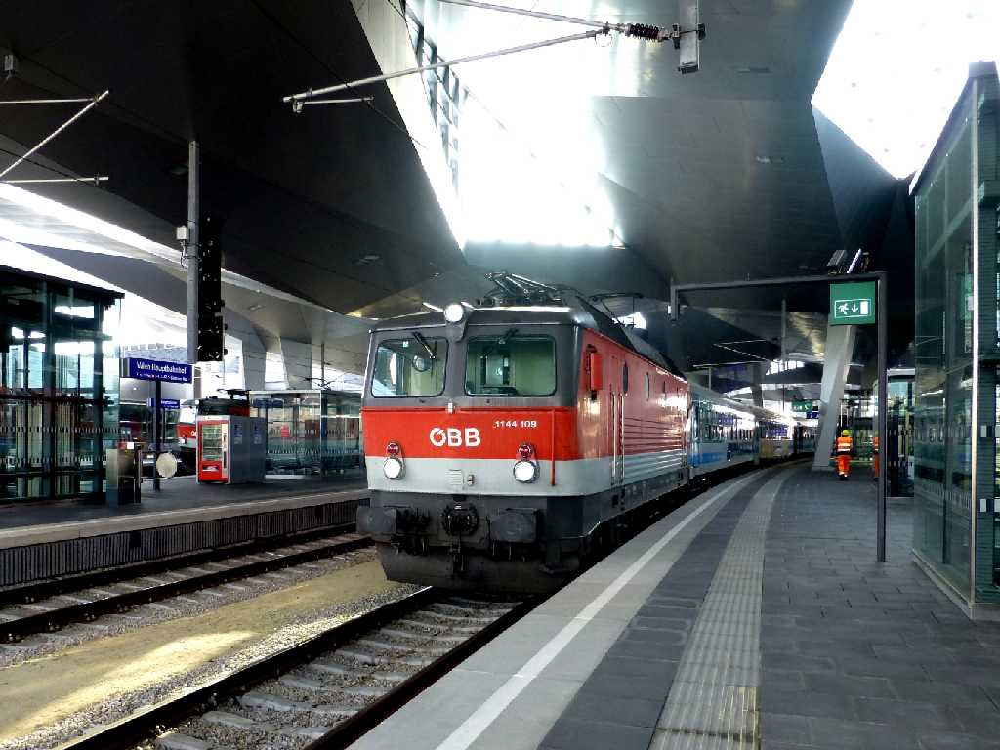
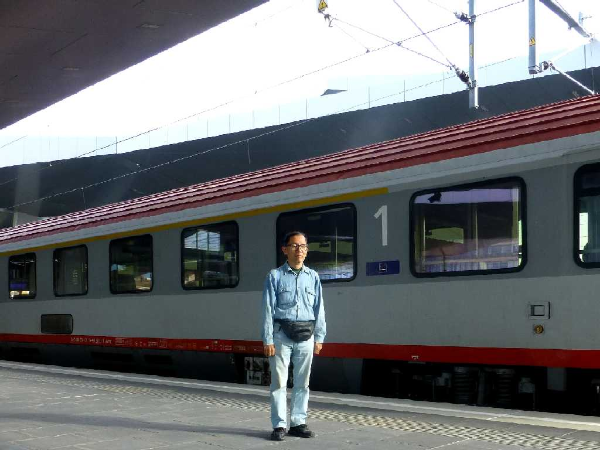
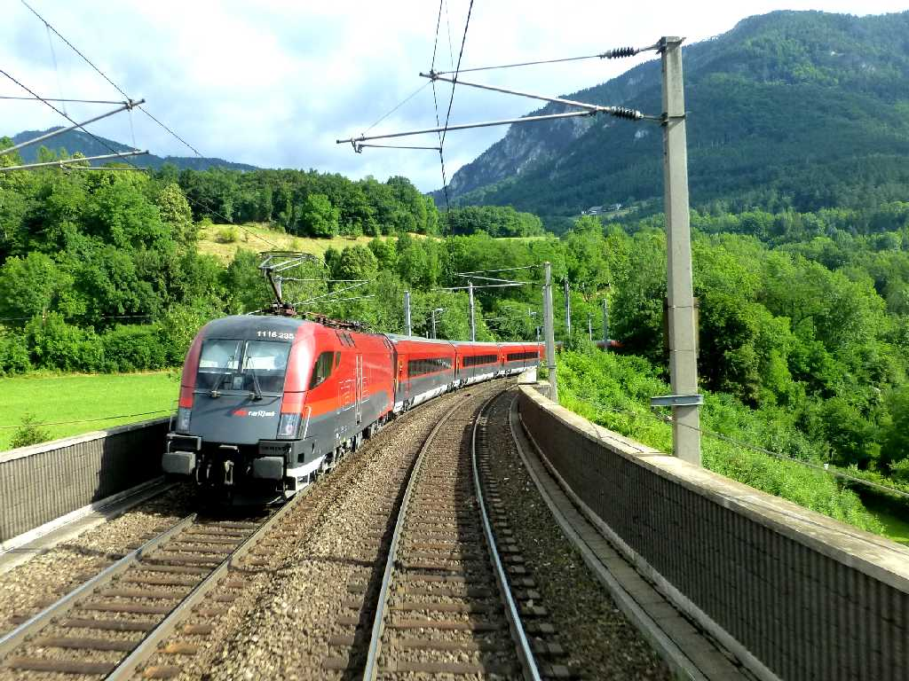
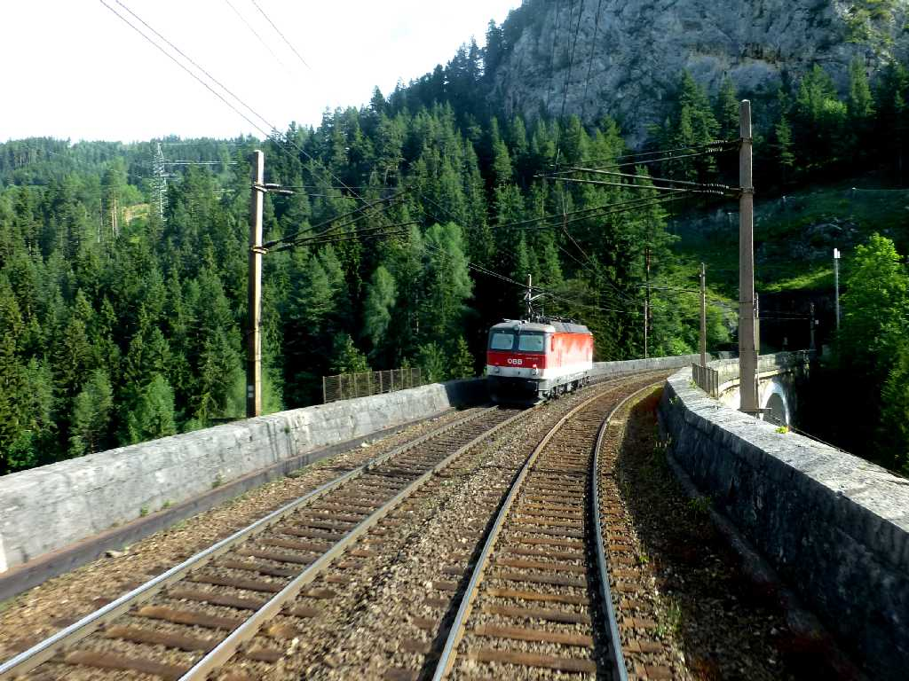
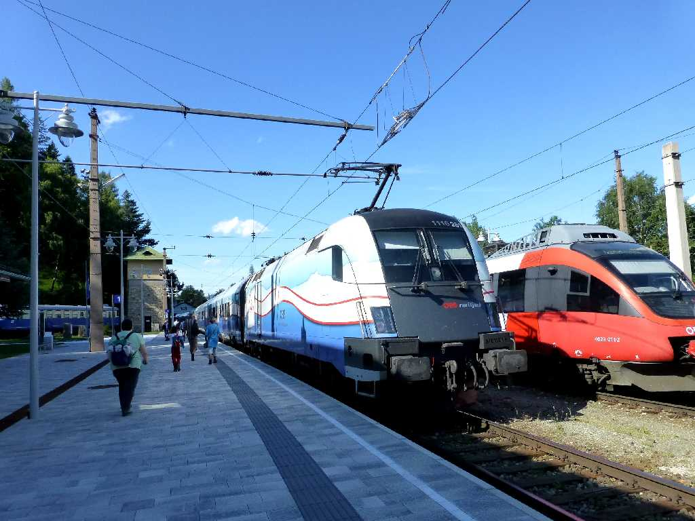

Bahnsteig 7 Hauptbahnhof Wien
ウィーン中央駅から世界初の山岳鉄道であるゼメリング鉄道でゼメリングに向かう

July 10 2015 Hauptbahnhof Wien

Zug Semmeringbahn
対向列車とすれ違うゼメリング鉄道

Viadukt Semmeringbahn
石積アーチ高架橋を渡るゼメリング鉄道

Bahnhof Semmering